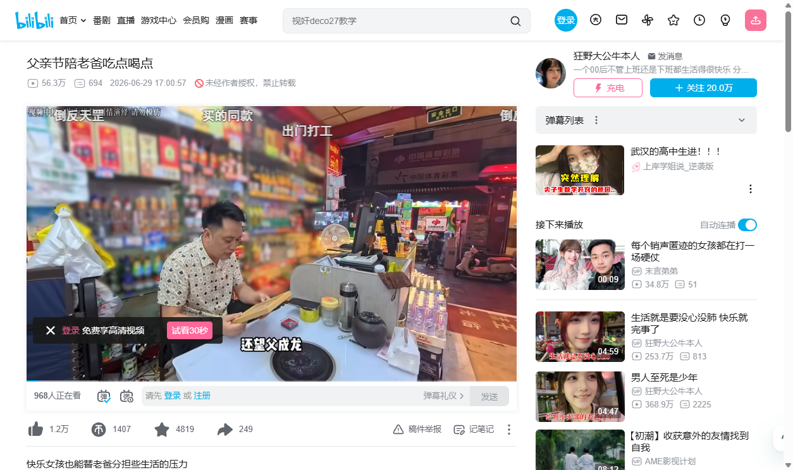
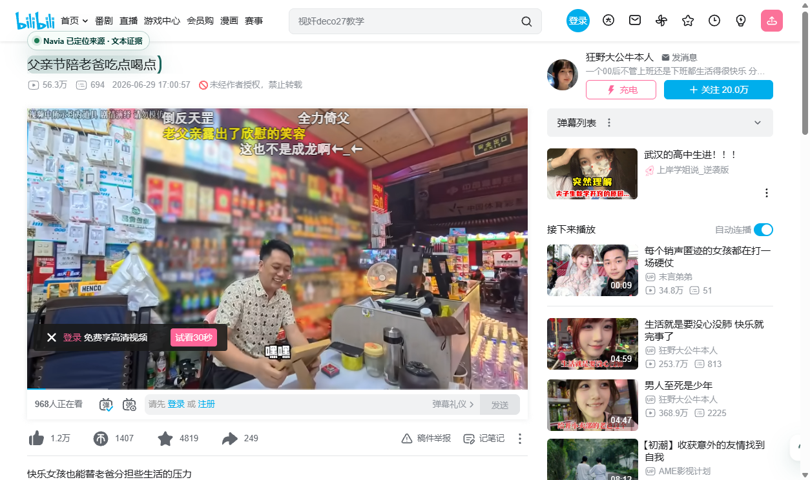
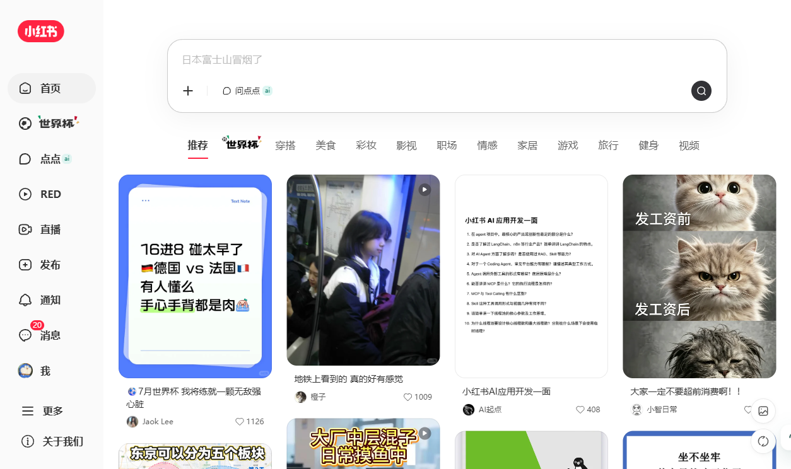
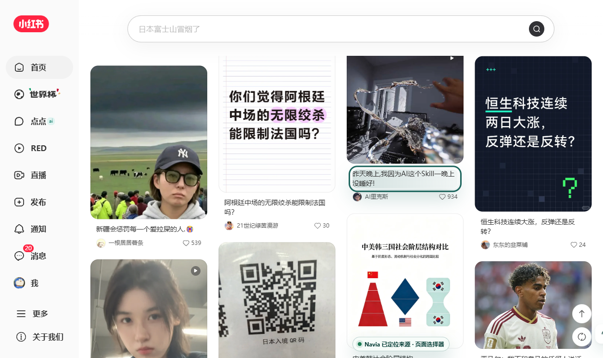

V1-MVP-QH 质量硬化真实站点验收报告
结论: PASS
声明: V1 MVP quality hardening passed scoped real-site acceptance.
证据路径: docs/active/project/evidence/v1_mvp_quality_hardening
运行方式: launch-temp-public-profile / temp-profile-with-injected-auth-cookies
目标架构与当前实现
当前实现链路：contentBridge.ts 注入 launcher/sidebar 并读取当前页 DOM signals，sidepanel React App 调用 Runtime，A Page Reading 产出 PerceptionDigest / SourceRef，C Mindmap 产出 nodeSourceMap，B Renderer 展示 Evidence Card Mindmap 和 Source Evidence，用户触发 source jumpback 后 contentBridge 执行定位、高亮、fallback 或 blocked。
本报告只验收 V1-MVP-QH scoped quality hardening：主内容抽取、Mindmap 去噪、source jumpback 三态和真实站点截图证据。
用户场景截图证据
B站 / homepage / pass
URL: https://www.bilibili.com/
读取: readiness=pass sourceRefs=19 digest=18 sourceCards=8
反跳: highlighted，source card=2
Fallback 口径: not_fallback
导图质量: labels=10 noise=0.00 unique=1.00
问题: none

B站 / video-detail / pass
URL: https://www.bilibili.com/video/BV1H2KU6oEjn/
读取: readiness=pass sourceRefs=16 digest=14 sourceCards=8
反跳: highlighted，source card=4
Fallback 口径: not_fallback
导图质量: labels=9 noise=0.00 unique=1.00
问题: none


小红书 / homepage / pass
URL: https://www.xiaohongshu.com/explore
读取: readiness=pass sourceRefs=53 digest=18 sourceCards=8
反跳: highlighted，source card=1
Fallback 口径: not_fallback
导图质量: labels=10 noise=0.00 unique=1.00
问题: none


小红书 / note-detail / pass
URL: https://www.xiaohongshu.com/explore/6a433617000000000f02af1e?xsec_token=[redacted]&xsec_source=
读取: readiness=pass sourceRefs=21 digest=18 sourceCards=8
反跳: highlighted，source card=1
Fallback 口径: not_fallback
导图质量: labels=14 noise=0.00 unique=1.00
问题: none


观察者网 / homepage / pass
URL: https://www.guancha.cn/
读取: readiness=pass sourceRefs=124 digest=16 sourceCards=8
反跳: highlighted，source card=0
Fallback 口径: not_fallback
导图质量: labels=14 noise=0.00 unique=1.00
问题: none

观察者网 / article-detail / pass
URL: https://www.guancha.cn/dengfei/2026_07_01_822185.shtml
读取: readiness=pass sourceRefs=7 digest=7 sourceCards=8
反跳: highlighted，source card=4
Fallback 口径: not_fallback
导图质量: labels=12 noise=0.00 unique=1.00
问题: none